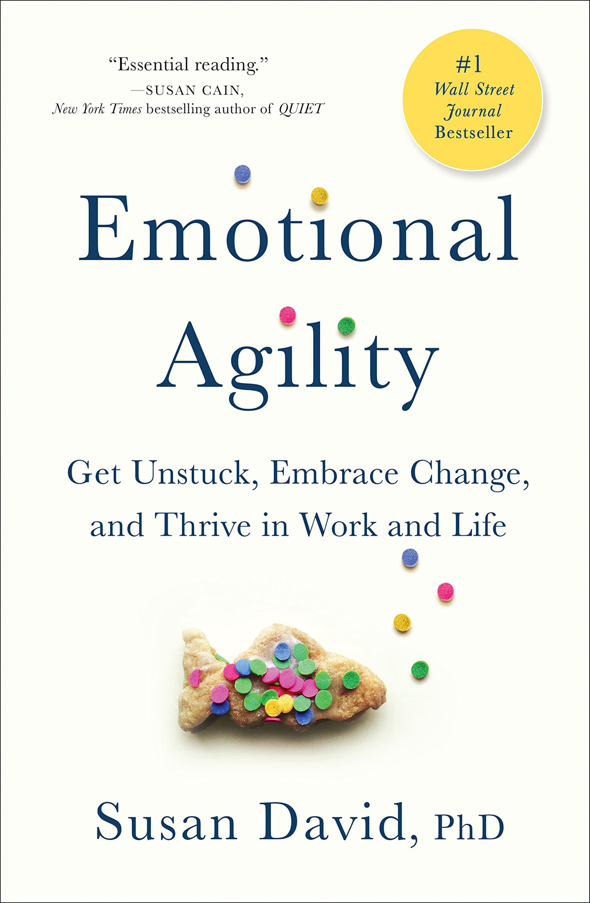

Motivation
The pressure point
Picture this scenario
You’re leading a critical system migration project. Six months in:
- Two key developers just resigned
- Stakeholders are pushing back on the new interface
- Your team is exhausted and morale is low
- Leadership is questioning the ROI
- You have three weeks until go-live
How you navigate this moment will determine the project’s outcome.
The dilemma
Organizational change is notoriously difficult, with many initiatives failing to achieve their intended outcomes (Kotter, 1996). The primary cause is not technical complexity or inadequate resources. It’s people—resistance, fear, burnout, poor emotional navigation. But:
As IS professionals, we are trained in systems, architectures, and algorithms, but we are rarely trained in navigating our own emotional responses when things fall apart.
The importance of the inner world
How we deal with our inner worlds does drive everything. Susan David, Psychologist
In our modern societies, we attribute a lot to externalities. Often we think that we can change anything by changing externalities (e.g., changing our look to become more self-confident). And the external world does matter. Just think of what we discussed during the last lectures (e.g., “shaping the path”). But ultimately, the way we navigate our inner world, our ability to be healthy with ourselves, with our emotions, to be connected with our values and who we want to be, this has an outsize impact on everything else.
This is important as …
… you will face:
- Failed implementations and rollbacks
- Resistance to technological change
- AI-driven uncertainty and disruption
- Constant learning demands
- Team conflicts and turnover
- Budget cuts and scope changes
and your success depends on:
- Navigating setbacks without burnout
- Leading through uncertainty
- Maintaining clarity under pressure
- Supporting team resilience
- Making values-aligned decisions
- Recovering quickly from failures
Technical skills get you in the door.
Emotional agility determines whether you thrive or burn out.
Contents
This class is about emotional agility, the ability to come to your inner world—your thoughts, emotions, experiences and self-stories—with courage, compassion and curiosity. We try to find answers to the questions why and how we should learn from them, evaluate the situations we face, be clear-sighted about your options and move forward with values and purpose.
We’ll explore:
- Resilience: what research tells us about people who bounce back (the what)
- Emotional Agility: a practical framework for developing resilience (the how)
You will see that our internal responses to external challenges often matter more than the challenges themselves.
Foundation
This unit is inspired by and based on the books Resilience by Southwick et al. (2023) and Emotional Agility by David (2016)
This book written by world leaders on the science of resilience, is a must-read for everyone … The lessons in this book are what we should teach our children. Barbara Olasov Rothbaum
Susan David is the leading authority on how our thoughts, emotions, and motives can empower or derail us. Her work combines compelling research, an engaging style, and practical wisdom to show people how to create meaningful change in their lives in order to thrive. Peter Salovey, President, Yale University


Resilience
Definition
The term resilience is used to describe an individual’s capacity to withstand and ultimately recover from adversity. (Southwick et al., 2023)
Additional characteristics:
- Resilience people have face challenges
- Resilience unfolds over time
- Feeling distress does not mean someone is not resilient
- Resilience often involves growth
- Resilience can differ along the life span
- Resilience occurs in context
A rare resource?
We assumed resilience was rare, reserved for a select group of unique individuals. We were wrong. Resilience is common. It can be witnessed all around us, and for most people it can be enhanced through learning and training Southwick et al. (2023, p. 22)
Themes of resilience
In their research, Southwick et al. (2023) identified recurring themes that characterize resilient people:
- Confrontation with fears
- Maintaining of an optimistic but realistic outlook
- Searching, accepting, and providing social support
- Imitating resilient role models
- Relying on a inner moral compass
- Drawing on personal meaning-making systems or practices (e.g., spirituality)
- Attending to health and well-being
- Remaining curious, pushing to learn new things
- Approaching problems with flexibility, and, at times, acceptance
- Finding meaning and growth during and after traumatic experiences
Resources
Building resilience and bouncing back is easier for some than it is for others. (Southwick et al., 2023)
The privileges that my be conferred by race and several other identities in our society need to be acknowledged. In addition, people with valuable resources such as financial security, good health, and rich social networks can leverage these resources when adversities happen.
Optimism
Optimism is a future-oriented attitude that includes confidence that things will turn out well. (Southwick et al., 2023)
Our emotions are strongly tied to our attention and behavior (e.g., surviving or learning). Unlike pessimists, optimist do not remain focused on the negative. When optimist broaden their attention, they increase their capacity to reappraise situations that initially seemed negative. This allows them to (sometimes) see challenge in hardship and opportunities to grow.
Emotional agility
Bad or good emotions?
According to David (2016), there is a core narrative about emotions1:
There are good emotions (e.g., joy, happiness) and bad emotions (e.g., grief, anger)
However, beauty and fragility often go hand in hand2.
Research shows that struggling to determine whether a thought or feeling is good or bad can …
- take up huge amounts of mental energy,
- lead the thought or emotion to hang around for longer,
- decrease our ability to solve problems,
- negatively impact our relationships, and,
- lead to lower levels of well-being over time (David, 2016).
While it is rarely fun to be in a bad mood, and it is certainly not healthy to constantly stew in ‘negative’ emotions, here some examples of what experiences of sadness, anger, guilt, or fear can do:
- Help us form arguments
- Improve memory
- Encourage perseverance
- Make us more polite and attentive
- Encourage generosity
- Make us less prone to confirmation bias
Bothness
We can label thoughts and emotions as good and bad, treat them as facts (e.g., “I am sad”), or allow them to become our identity.
We can also treat them differently and create space for other aspects of ourselves to come forward. We can embrace bothness, reflecting the complex, contradictory, real.
Bothness is the idea that you can do something even if you are scared to do it. It’s the idea that you can feel angry with your partner, notice that anger with compassion, and still reach out and give them a hug, because you recognize how much you value the relationship. There is wisdom in bothness. We can be afraid and still engage with a challenge. We can grieve and still laugh at a joke. Bothness gives us access to the full spectrum of life. Too often, we think that the world is a series of either/or decisions. Be bold. Choose both. Susan David, Psychologist
Let’s listen to the expert
Thoughts on emotion and behavior
Growth and freedom
Between stimulus and response there is a space. In that space is our power to choose our response. In our response lies our growth and freedom. Frankl (1985)
Emotional rigidity vs. agility

People frequently die in fires or crash landings because they try to escape through the same door they used when they entered. David (2016)
If you’re ‘emotionally rigid’, you’re blind to new experiences and possibilities. You’ll find yourself stuck on the same path, even though it has made you unhappy for years. Picture a Naval officer demanding a lighthouse change course without realizing it wasn’t a ship (David, 2016, p. 1). The belief was that his vessel had right of way but such rigid thinking could have led to catastrophe! Adopting agility in your emotions is more likely to steer you on the right path and allow you to be flexible when you need to be.
Emotional agility is needed as the world is constantly changing and, thus, always presenting us with new opportunities and situations to which conditions or pre-programmed cognitive and emotional responses are not helpful. We should, thus, always embrace a beginners mind.
Hooked
Getting hooked means that we let our actions be guided by our thoughts, feelings, and stories, rather than of what is really important to us.
A ‘hook’ is a thought or emotion that draws us in and keeps us preoccupied. These hooks are often extremely counter-productive.
The four most common hooks:
- Thought blaming
- “I thought I’d embarrass myself, so I didn’t go.” Letting thoughts drive behavior without questioning them.
- Monkey mindedness
- Dwelling at length on a situation and ‘awfulising’ the circumstances. Example: Replaying a difficult conversation for days.
- Old, outgrown ideas
- “I’ve always been the technical person, not the people person.” Believing you must act in ways you have in the past, even when circumstances have changed.
- Wrongheaded righteousness
- “My architecture is objectively better—I don’t care what the business needs.” The need to be ‘right’ at all costs, even when there’s an obviously better course of action.
Key signs that you’re hooked are when you
- try to avoid having particular thoughts or rationalize them away (e.g. “I’m unhappy in my job… but at least I’ve got a job!”);
- always try to ‘think positive’ or be happy;
- ignore troubling emotions (like sadness);
- blame your thoughts for having ‘made you’ do something e.g. ‘I yelled at him because It thought he was undermining me,’ or ‘I didn’t put my hand up for the project because I thought I might fail.’;
- overanalyze specific experiences (e.g. a past disappointment); or
- fight against the reality of the world and your life ‘as it is’.
Mental patterns:
- You try to avoid having particular thoughts or rationalize them away
- You always try to ‘think positive’ or be happy, regardless of context
- You over-analyze specific experiences (e.g., dwelling on a past disappointment)
- You can’t let go of an idea or “being right”
Emotional patterns:
- You ignore troubling emotions like sadness or frustration
- You blame your thoughts for “making you” do something
- You fight against the reality of the world ‘as it is’
Behavioral patterns (especially at work):
- You stay silent when you know something is going wrong
- You busy yourself with small tasks without considering the big picture
- You become apathetic or volunteer only for easy tasks
- You make backhanded comments about coworkers or projects
- You rely on assumptions or stereotypes about colleagues
- You aren’t taking agency over your career development
Getting unhooked

Show up
The first step is acknowledging emotions and stresses as they occur – not to dwell on them, but to learn. What am I feeling right now? What does this say about my values? An emotionally agile person is able to recognize their feelings with self-compassion and understanding.
Being more self-compassionate includes:
- letting go of self-criticism and expectations of perfection (within yourself, your work, your life at home);
- recognizing that comparing yourself with others is, almost always, a losing game;
- understanding that self-compassion does not make you weak or lazy. In fact, research shows the opposite - that self-compassion sharpens your edge;
- appreciating that self-compassion is not about lying to yourself. People who are self-compassionate are more likely to face into the truth about themselves and their weaknesses, than those who lack self-compassion.
Stepping out
Stepping out means facing and labeling the problem. You need to take an objective view and assess your emotions. This can help you filter feelings that may not be entirely appropriate and to find ways to deal with what you are feeling.
When you step out objectively, you are in control of your feelings and not the other way around.
Skills you can cultivate:
- The ability for you, the thinker, rather than the thought to be in charge, and for you, the person, rather than your emotions to be in charge. In other words, developing the skill that allows you to be centered, reflective and intentional in your reactions to events around you.
- Developing a ‘meta view’ or the ability to still feel your feelings and think your thoughts but to ‘helicopter’ above these in order to make effective decisions.
- The ability to recognize when you are holding on to specific positions and ideas in ways that may not serve your life, and to let go of these.
Walking your why
‘Walking your why’ means discovering what is important to you and acting accordingly. When you walk your why, you live by your personal values as closely as you possibly can. Living by your values will help to make your life more meaningful and satisfying.
While it is not always possible to work or live the exact life you wish, there is usually a way to make your life or job fit better within your values.
Values
- are freely chosen; have not been imposed on you;
- are not goals; they are ongoing rather than fixed;
- guide you rather than constrain you;
- are active not static;
- allow you to get closer to the way you want to life your life;
- bring you freedom from social comparison;
- foster self-acceptance, which is crucial for mental health.
When we move towards our values and are able to make choices that align us with who we want to be, that is incredibly empowering, and provides a new found sense of autonomy in difficult situations.
To make a difference in this area it may help you to:
- Watch the gaps: Simply noticing the gaps between your values and your behaviors in specific domains (at work, home, in your relationships or as they relate to your health and wellbeing) can help you to close them.
- Think first: “is my response in line with my values of Accountability, Straightforwardness and Challenge?”
- Remember that values are not abstract and intangible ideas. Rather they are qualities of action that you can bring to every day choices.
Move on
Once you’ve unpacked what you’re feeling, why you’re feeling that way, and aligned your next steps with who you want to be in the situation, it’s time to move on and take action.
Emotionally agile individuals handle situations as they come up, feel them fully, make a plan, and don’t delay.
This requires some critical areas of focus:
- A change mindset: developing the belief that positive change is actually possible. Research shows that subtle differences in our beliefs about change can have a long-term impact across many different areas of our lives.
- Effective motivations: trying to make a change based on a ‘have-to’ motivation (e.g. to lose weight out of a sense of obligation to your doctor, spouse, or due to shame) is less likely to be effective than a change based on a ‘want-to’ motivation (e.g. to lose weight out of a genuine, internal desire to be healthier.) The type of motivation we have is critically important in determining whether a change will be successful.
- Habit tweaks: understanding how to master the physics of successful habit change.
- Moving to discomfort: making the choice to push oneself towards the edge of one’s comfort zone as one tries to develop skills and cultivate relationships.
Closing remark
Remember the scenario we opened with—the resignations, the deadline pressure?
The technical skills to solve that problem? You already have them.
What determines the outcome is how you navigate your inner response when everything feels like it’s falling apart.
Who’s in charge—the thinker or the thought? Are we managing our own lives according to our own values and what is important to us, or are we simply being carried along by the tide? David (2016)
Every system you build, every transformation you lead, exists in a human context. Your ability to remain emotionally agile—this is what separates effective leaders from those who burn out or stagnate.
The question isn’t whether you’ll face adversity.
The question is: who will be in charge when you do?
Challenges
You want to learn how to lead change more efficiently? Here are three challenges that might help you along the way.
- Level 1: Reflect through writing. During the next two weeks, take 10 minutes at the end of each day to write about your emotional experiences from the past day; don’t worry about making it perfect or readable: go where your mind takes you; it’s not about the document (you can delete it); the point is that those thoughts are now out of you and on the page.
- Level 2: Watch the gaps. Identify the values (i.e., qualities of action), that are important to you3; analyze your behaviors in challenging situations and watch the gaps between them and your values (i.e., is my response in line with my values of …)—often simply noticing gaps can help to close them
- Level 3: Getting unhooked. extend watch the gaps and recognize your patterns, notice if you’ve been hooked by your thoughts and feelings; if so, label them, accept them, and then act on your values (i.e., take deliberate action that aligns with your values; do not revert to the familiar, but take and enjoy the challenge, without being overwhelmed)
Reading list
For digging deeper, I recommend reading the articles of the reading exercise (again) plus following articles/books:
- Psychological flexibility: Bond et al. (2013), Kashdan (2010)
- Self awareness: Brown & Ryan (2003)
- Logotherapy: Frankl (1985)
- Emotional agility: David & Congleton (2013) (HBR), David (2016) (book)
- Differences in emotion regulation processes: Gross & John (2003)
- Reflect through writing: Lepore & Greenberg (2002), Slatcher & Pennebaker (2006)
- ACT: Luoma et al. (2007), Wilson (2014)
- Fundamental attribution error: Tetlock (1985)
- Acceptance and commitment therapy: Hayes et al. (2006)
Literature
Footnotes
The labels god and bad are, e.g., also used in most of the academic articles about emotions.↩︎
When you love someone, your also open up yourself to having your heart broken—life demands that you can experience some of the so-called bad thoughts and bad emotions — that is “the truth of living”.↩︎
Possible personal values as noted in David & Congleton (2013): accuracy, achievement, adventure, authority, autonomy, caring, challenge, change, comfort, compassion, contribution, cooperation, courtesy, creativity, dependability, duty, family, forgiveness, friendship, fun, generosity, genuineness, growth, health, helpfulness, honesty, humility, humor, justice, knowledge, leisure, mastery, moderation, nonconformity, openness, order, passion, popularity, power, purpose, rationality, realism, responsibility, risk, safety, self-knowledge, service, simplicity, stability, tolerance, tradition, wealth↩︎